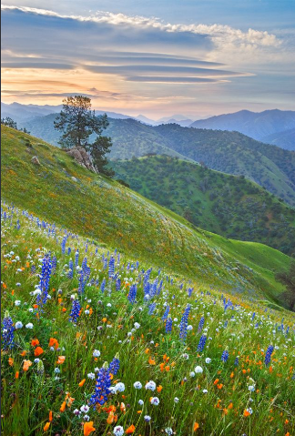
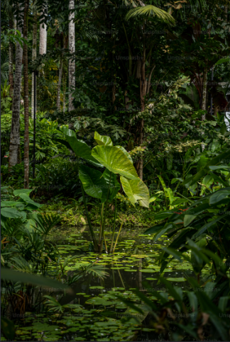

Pradera: Una extensa llanura montañosa cubierta de vegetación herbácea, flores silvestres y árboles dispersos bajo un cielo despejado.

Selva: Un ecosistema tropical denso y húmedo, caracterizado por su abundante vegetación de hojas grandes y pequeños cuerpos de agua interiores.